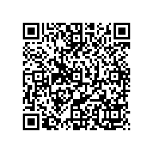

Scrambled Eggs
Scramble any file into a gif of qrcodes 
* Format
* Example Decoder
* Android Decoder App
* Make Your Own GIF
* Example GIFs
* TODO
* Credit
* License
* Fork on github
Why?
Why not?
I wanted to read phrack 49/14 again, phrack was big part of my
childhood and thought me most I know today.
When I wanted to read it on my phone, and as I opened the web page,
all of a sudden I felt betrayed.
Everything I do is being tracked and monitored, the clicks, every
character I type, every scroll I do. Why? because I gave up ground,
little by little, convenience here, nice restaurant recommendation
there, small personalized messages here, now we are beyond the point
of no return. Add my flight to the calendar automatically, sure, read
my mail, no problem, automatically take meeting notes of course I
would want that. Yes I want to have easy search in all git repositories.
Who wouldn't want to use AI to correct their grammar? Text searching
my photos sounds great. I love the Assistant movies, it is so
personal, and the music is so nice.
I betrayed myself.
Scrambled Eggs lets me download files on my phone in airplane
mode. It encodes data with qrcodes and then you can download through
the camera with a special decoder.
I just want to read phrack without the whole world knowing.. is it
too much to ask?
There are much easier ways to do this (like just downloading the
file on your computer and then uploading it to your phone),
but I felt really cool when I downloaded a file in airplane mode :D
It is also extra funny now that GIFs are supported everywhere haha.
Speed?
If you are lucky you can get to 20-30kbps, but usually you miss one
frame from 30 and you have to wait the whole gif to rotate :(
I believe I can speed it by playing the same gif with different rate
next to each other and scan multiple qrcodes simultaneously.
Size?
50kb text becomes about 300kb gif
How?
The format is as follows:
the file is first compressed (xz, gzip, none are supported), then
splitted into chunks of 2kb, after that each chunk is encoded with
crc:base64(header):base64(data), and one extra frame is added with
meta data, that contains header:base64(meta data).
Everything is encoded as string so it is easy to use standard
qrcode libraries.
frame format:
crc32:base64(header):base64(value)
crc32: this is the crc32 sum of (chunk type:chunk id:out of:value),
because there are a lot of errors when reading qrcodes, we simply
ignore the decoded result, and continue to scan, if the crc is mismatch
header:
base64 encoded string version:chunkType:chunkId:outOf
version: at the moment it is 0
chunk type:
1: DATA, the following frame contains data
0: META, the following frame contains meta data
chunk id: this is simply the index of the chunk, if the encoded file
is 100kb and we have 2kb chunks, we will have 100/2 chunks to "download"
out of: number that specifies how long is the data, used for progress bar
value: this is base64 encoded binary
---
DATA VALUE:
data frames simply concatenate all decoded values into a binary
---
META-DATA VALUE:
name:sha:totalCount:contentType:totalSize:compressionType
name: string, the file name
sha: string, the file's sha256 printed as hex string
totalCount: int, total number of chunks, redundant as the value in the header
contentType: string, mime content type of the data
totalSize: int, size in bytes
compression: string that is one of gzip,xz or none
the data is also padded with "*", so make sure to do
value.replace("*","")
(main reason for the extra padding is so the bar-code are not very
different in size, and it is easier to be decoded one after the other)
Example decoder pseudocode:
pieces := map[int][]byte
totalPieces, sha
for {
barcodeString := decodeBarcode()
splitted := strings.SplitN(barcodeString, ":",5)
// compare the crc32 with the rest of the frame
// crc32:(chunk type:chunk id:out of:value)
if (crc32(splitted[1:..]) != itoa(splitted[0]))
continue // if mismatching, ignore
byte[] data = base64decode(splitted[4])
type := atoi(splitted[1])
// if the chunk type is DATA, colect it
if (type == 1)
pieces[atoi(splitted[2])] = data
else if type == 1 {
meta := strings.Split(":",string(data))
totalPieces = atoi(meta[2])
sha = meta[...
filename = ..
content type = ..
}
if totalPieces > 0 && len(pieces) == totalPieces {
whole = join all bytes from the pieces (in index order)
check if the sha matches
decompress
break
}
}
Android app:
you can fork it on github, install flutter and do flutter run \
--release to upload it on your phone, maybe soon I will release it
to the playstore
you can also download the app from the google playstore
(in process of publishing, you can download the old version)
iOS app:
work in progress, but since I sold my macbook I have to setup xcode
on hacky vmware macos image..Apple wont approve the app anyway.
Examples:
the first principle koan:
(make sure you focus on only one of the images, otherwise you will
get conflicts)
TODO:
* try encoding few small bar-codes instead of one big
* try to use multiple colors overlay-ed, and filter on the camera
* use some ML to predict which images are hard to decode and delay
them more when making the gif
* add non text viewer in the app
* make the app render non 80 char text (not sure about that)
* add UUID in the file, so multiple files can be scanned in the same
time
* once the app is released add url to dowlonad it as a qrcode :D
* change the format to include some kind of uuid so multiple fies
can be donwloaded in the same time
Credit:
* Icons made by Popcic from www.flaticon.com is licensed by CC 3.0 BY
* forked flutter_qrcode_reader and QRCodeReaderView to make the scanner
* using zxing to parse multiple qrcodes at a time
License:
This is free and unencumbered software released into the public domain.
Anyone is free to copy, modify, publish, use, compile, sell, or
distribute this software, either in source code form or as a compiled
binary, for any purpose, commercial or non-commercial, and by any
means.
In jurisdictions that recognize copyright laws, the author or authors
of this software dedicate any and all copyright interest in the
software to the public domain. We make this dedication for the benefit
of the public at large and to the detriment of our heirs and
successors. We intend this dedication to be an overt act of
relinquishment in perpetuity of all present and future rights to this
software under copyright law.
THE SOFTWARE IS PROVIDED "AS IS", WITHOUT WARRANTY OF ANY KIND,
EXPRESS OR IMPLIED, INCLUDING BUT NOT LIMITED TO THE WARRANTIES OF
MERCHANTABILITY, FITNESS FOR A PARTICULAR PURPOSE AND NONINFRINGEMENT.
IN NO EVENT SHALL THE AUTHORS BE LIABLE FOR ANY CLAIM, DAMAGES OR
OTHER LIABILITY, WHETHER IN AN ACTION OF CONTRACT, TORT OR OTHERWISE,
ARISING FROM, OUT OF OR IN CONNECTION WITH THE SOFTWARE OR THE USE OR
OTHER DEALINGS IN THE SOFTWARE.
For more information, please refer to http://unlicense.org/
{kind=link}
{kind=link}